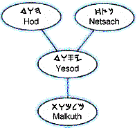
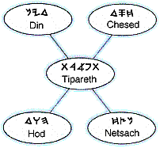
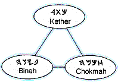

The Sephiroth:
Bowls of Spirit
Our examination of the sephiroth as they appear in Adam Kadmon will be closer than in their appearances in the Crown Diamond diagram, in which the unity of the spheres is a vital factor, and in which the intricacies of correlation make exposition difficult in these early days of its study on Earth. In Adam Kadmon the foundational facets, or distinctions, of each sphere (1 Cor. 12) are of paramount concern. In the Crown Diamond the collective uniformity as fabric of the Breath is emphasized, by which perspective the many facets combine to display the perfect brilliance of the Foundation Stone (Eph. 4).
If these claims seem a little grandiose, they are nevertheless not far from the every-day reality of the Creation parable of the flesh. Experience teaches us that, though distinct from the eye, the hand can function in one accord with the power of the elohim of sight, as sight in the power of the Elohim of touch: the ability to reach out and examine is common to the Intelligence that controls and utilizes the faculties. The outward differences of the bodily members are among our greatest blessings; for although it is by the distinct delineation of each member that the fullness of Elohim is perceived, it is by the coordinated functioning of all members that the ineffable unity of Elohim is understood.
The sephiroth of Adam Kadmon have been given many labels by many students of the scriptures over many centuries, and we affirm the fruit of sincere efforts to understand their meanings. We therefore accept kabbalah-- the "received" tradition-- on the whole, though not always the letter of traditional writings. As for myself, I have particular reservations against those branches of kabbalah that concern themselves with magical applications. Such approaches, if validated by results, nevertheless exalt themselves above the will of hwhy, who can perform wonders without our aid or surrogacy (John 5:30) and has made it quite clear that it is not for us to direct our steps--that is, to concoct agendas for our time on Earth, but to receive the blessings that comes by waiting upon HaShem to lead us in the way we should go.
There are some for whom the term "tradition" will be a stumbling block because of the literal words of Y'shúa and the prophets. However, it wasn't the traditions, themselves, that brought offense, but the manner of observance. To wash cups and such by the Holy Spirit is to wash within, as the cups are understood to be found within; and the sephiroth are such cups. To designate something as korban in the Spirit is to know its proper use; for the Holy Spirit dwelling in each of us is able to communicate its use, directly-- both implicitly, as we continue to walk in Ruach HaQodesh, and also explicitly, should we begin to stray from the Spirit's constant and reliable guidance.
Traditional conceptions of the sephiroth are scattered throughout the religious writings of time. One interested in mystical kabbalah might well begin with The Zohar ("The Splendor"), which is now available in its entirety in English translation, on the web as well as in print. An excellent primer for historical kabbalah can be found in Encyclopedia Judaica, which is available at most larger libraries. A good overview of basic concepts and approaches can be obtained in the reprint of Dion Fortune's book, The Mystical Qabalah. As every man must witness according to the measure of truth entrusted to him, (Gal. 6:5), this presentation will largely confine itself to those understandings given to its author by HaShem, "who giveth to all men liberally and upbraideth not" (James 1:5).
{kind=link}
{kind=link}
The sephiroth are numbered from One to Ten. Some students begin conscious study of the spheres at Emanation One; others, at Ten; and still others, at Six. My conscious study of the sephiroth began with Sphere Nine, which is commonly rendered Yesod, or "Foundation": "For other foundation can no man lay than that is laid, which is Jesus Christ"-- Jesu Christos, Khristos Iesous, Y'shúa haMashiyach: Joshua, son of Nun/None-- son of potentiality, of perpetuity; son of Noon (1 Cor. 3:11): Yah's Shúa: the appearance of the Salvation of hy (Yah/Jah/YH), as proclaimed and manifested by the anointed One of hwhy/Unity (Is. 29:21). Having so begun, I will so proceed.
When I first examined Adam Kadmon, my attention fell upon Yesod (Prov. 9:12). I saw within the diagram a symbol of the physical body, with bound feet below (Malkuth) and with arms outstretched above (Hod, Netsach). I saw an image suggestive of the earthly crucifixion of Messiah. Without instruction in the mysteries of kabbalah, I understood, by seeing first the cross of the Jesus of Evangelical American Protestantism, that the symbol belonged to "things Christian," whether or not it was very "Christian" to investigate further.
But look further I did-- higher, as it were: to discover, in the next court, what I took to be the cross of the resurrected Messiah, and which I later came to understand as being representative, also, of the spiritual cross borne by the heavenly Messiah from the foundation of the world (Rev. 13:8). What had appeared from the view below as 
Looking two courts higher, I saw a Trinitarian conception (Chokmah, Binah, Kether, and began to understand the meaning of the scripture, "No man cometh to the Father, but by me." I had not yet come to the Father, though he has been always with me (Ps. 139:8), nor yet to any real comprehension of the Unity of the concepts of Father, Son, and Spirit; but I found that my mind was now, somehow, more ordered for the approach. In growing faith that the Son would someday reveal the Unity to me (Deut. 6:4; Matt. 11:27), I turned my attention once again inward, and to those aspects of the sephiroth that speak of things familiar-- of the First Adam.
Not everyone, as I have said, will find themselves beginning this study as I began. We all walk the same path (James 2:10), but awareness of the journey comes at different points in the walk for different people (Rom. 5:8). Some may need to begin, consciously, at Malkuth, the tenth emanation, also known as "Kingdom.
In the simplified view of the meanings of Malkuth, this is the foot of the earthly cross of Messiah Y'shúa, as implied earlier. If you have yet to come to know ImmanuAL, the inward personage of Mashiyach, whose yoke is easy and whose burden is Light-- you must begin at this parable sooner or later, whether consciously or not; for the Presence of HaShem opens only to his own (John 10:1-2, 11-14; Rev. 3:7); and it is at Golgotha that one declares his fealty.
No man can come to the Father, except the Father draws him in, but any man can knock on the door. Every door has two sides, so apply the teaching by Y'shúa by taking it up a notch, "In all things whatsoever ye would that (men) should do to you, do ye even so to (them): for this is the law and the prophets" (Matt. 7:12). If you would have HaShem open unto you, you must first open unto Him (Rev. 3:20).
Even so I began, before my first encounter with Adam Kadmon, having become disgusted with a worldly life of mixed success. As I looked forward to the various futures possible for me in the world of men, I concluded that the best of them could not satisfy my soul; and I gladly left everything, counting it as nothing, to wander here and there between pivotal locales of my abandoned life, having decided that nothing mattered to me more than a personal acquaintance with the illusive man called Jesus. Even in this context of personal resolve and religious preconditioning, however, I had but a dim awareness of what I was doing, day to aimless day; and I had hardly any inkling of what turns my life might take if my spiritual hunger were to be satisfied.
I was so nearly a fool! My mind was still imprisoned by religious expectations hammered into me from infancy; and I nearly believed, subconsciously, that I would encounter Messiah-- literally-- on some street, somewhere! And, so, I did, after a fashion: but not on the street. just off of it, while taking a stolen rest on a poker table in New York City's Greenwich Village, at a place, now gone, called "Singapore Sam's Cafe Caricature." I remember thinking, through the confusion of drugs, "There must be some way to talk with God directly!
And there is! I remember my head turning (I'm quite sure I didn't turn it), then seeing-- as it were-- a hole appear in the dilapidated wall to my right, providing a curtained window to unknown regions through an ambient halo of green. "I wonder what that is?" I thought. "Maybe it's the Holy Spirit," came an answer.
I deserved the retort, but not the blessing of its promise. A "dreamer" from my youth and now given into drugs, I had become accustomed to such things as voices that seemed to come from nowhere. Portions of the universe had appeared and disappeared, unexpectedly, without explanation, after all. As consequence, I gave the experience a brief moment of such serious thought still possible to my hedonistic mind; and I expected no real answer to what I had not seriously recognized as a prayer. My expression of interest had more of an aside than a prayer. The "Holy Spirit?" Far out! I gave a mental shrug to the dimly measured and (I thought) somewhat sarcastic remark from the corners of consciousness. I was ready to give the whole episode leeway to recede, quietly, into my subconscious.
Immediately, as the thought began to fade, it was as though a balloon filled with heavy air had burst over my body: whoosh! . . . and I was no longer my own, although I had yet to realize it. Nothing had prepared me for the magnanimity of God's grace and the free gift of his salvation, which is the presence of his Holy Breath within the hearts of his children. By the way, I don't capitalize God's pronouns; for we are made in accordance with his likeness and his image, and male and female created he them.
Just minutes after baptism in the Holy Spirit, I heard a commotion on the street. "Guess I'll go see what's happening," I thought. When I came to the stoop at the front of the store, I saw a big black man walking down the street and waving his arms, saying, "Praise God! Hallelu-hy! You people don't know nothing, but I know! Praise God!" As I watched him near the corner of Bleecker Street, my conscious thought was, "There goes another nut!" The old man in me scoffed, but the still-subconscious mind of the babe being born in me watched with eyes filled with wonder.
The verbalized thought of dismissal had barely cleared the overcharged synapses of my simmering brain, when I spontaneously emptied everything from my pockets and headed Uptown, saying to everyone I met, "Jesus is coming!" without understanding why I was doing it. I wasn't confused beyond my norm, particularly: just contentedly blank, willing to go with the flow; and that was good enough for me.
When I reached Central Park, I thought I might follow bicycle trails I had walked before; but the City had begun excavations to lay new sewage pipes down the center of my known paths, and they were blocked off. Just a little perplexed, and not knowing what else to do, I headed back Downtown by the West Side Docks, a new experience. A day tripper way out of his element as night approached, I worried that I needed help at one point; and I imagined that an angel came to walk beside me. One of the passers-by must have seen it there; for he jumped out of my way as though repelled by a magnetic charge. He was street-hip, no doubt.
I think it occurred to me that it was distinctly possible that things were now, somehow, somewhat different! I wandered around for a day or so in this deliberation, walking through familiar routines without my usual dissatisfaction, until I found myself in front of a big, imposing church. Upon arriving there, something in me stopped! I can't really say that I stopped. Not knowing why, I stood there foolishly, waiting a noticeable moment for I knew not what with some conscious unease. A tiny voice said, "Go in and wait." I did.
Inside, I it dawned on me that I was inside a church without having been forced to go there, and that I believed that I was actually supposed to be there! I had no idea why, beyond what survived of my instruction as a child. I figured I might as well pray, or something, while waiting. I did my best. When closing time came, two men approached and said, "You'll have to leave, now; we're closing the doors for the night." They were surprisingly respectful, sounding a lot like funeral directors. "He told me to wait here!" I protested. It was, as I considered the problem, rather nice to have a place to sit.
"Oh! He did, did he!?" they sneered. All pleasantries aside, they picked me up (one burly man grabbing each arm), yanked me out of the pew, and literally threw me back into the street. At last I was certain that what was happening to me was some kind of religious experience (John 16:2)! Remarkable, the verses that stick in the minds of those who have made no serious attempt to study scripture. Bless those men, I deserved it: I was still stoned (2 Sam. 7:14).
About a thousand mindless exclamations later, I concluded that I had probably received the Holy Spirit [I wasn't altogether sure, as I thought water baptism came first, or something (Acts 10 would have helped a lot)] and that I had better get myself to a real church somewhere to find out what ought to be done! After a few more days' lollygagging and marijuana smoking, I decided to head home-- well, that's where I intended to go; but where I actually went was to the city of my natural birth and to the church of a natural parent.
After settling in with relatives for an extended stay while I figured out what I was to do, I decided to go to a revival meeting and to obey whatever those in charge said I should do, no matter how difficult. Sneaking into what I considered to be their "Sin-a-Gog," I sat down in an inconspicuous place. The family was pleased to see me. As the singing began, it sounded more pleasant than I remembered. I was nearly ready to enjoy myself-- my still-stoned self-- when a Great Force literally yanked me out of the pew . . . (Here I go, again! But this time, I was being thrown back into the street without hands: nobody ever told me about Leviticus 10:9, and I hadn't read it!) . . . and sent me on my way.
The church followed me out, after no small confusion. I don't know how they found me; but when they caught up, I was firmly seated on a three-legged stool in my grandpa's abandoned workshop, perched before a lighted candle I got from somewhere at some time that I remember not at all. The garage was, otherwise, utterly dark; and I must certainly have seemed demonic, a daring presence in the gloom that I had prepared as defense for when whatever was going to happen, did. So, there I was found sitting, in the single light of the candle, when the congregation caught up with me.
"Why don't you come to me where I am?" I pleaded. "Why must I first become pure, in order to be saved?" The concepts and doctrines I had learned from my youth taught me-- in part because of my naturally convoluted reasoning-- that salvation was rather like a pat on the back for "doing the right thing." Sitting there alone, before the judgment of ministers, family, and friends, I had yet to learn that salvation is an ongoing process, and that the trappings belonging to the sinner that I had so long been would accompany me for so many more long years to come as I traded them for new garments on the long path towards perfection. Ignorant of the process of salvation, I saw my unworthiness reflected in gaping eyes that ought to have regarded me as a brother, wretch though I was. Perhaps they did; for the disaster of the evening was shared by all.
Unprepared to grapple with my reality because of tradition, the family church had no choice but to begin casting out devils. No doubt I was wrestling with a few (Deut. 7:22), but my words of question to them came by the Holy Spirit; and the answer to those questions came little by little on a fantastic journey of thirteen years to my water baptism-- it's coming still today, truth be told, little by little! Baruch HaShem: Praise The Name of hwhy! Glory belongs to Father hy, to his Projection as the Word that rides the Holy Breath: unending majesty; because these are faces of the one hla. HaShem, he is la. The universe cannot contain him; nor can any words of definition we might contrive. All that we perceive of him is but the glory of the faces he chooses to reveal to us as he turns his countenance upon us. His countenance will turn until, at last, it shall shine enlighten the hearts of all men and women with his abundant Life.
| 1st and 2nd Man (Illustration) | Font | |
|
site |
book |
{kind=link}